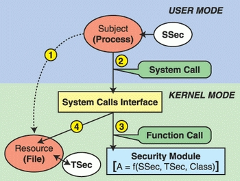

Linux Security Modules (LSM)
Table of Contents
1 Summary of LKM (Linux Kernel Modules)
- ../BuildKernel/LKM.html
- "Modules" of code that are needed in some installations and not in others. If needed always, compile/build as built-ins.
- Object code file,
.koextension; see/lib/modules/ insmodloads a module; kernel address space expands, now includes the methods of the module; some of them are syscalls.rmmodunload the module; kernel no longer has the module and its methods.lsmodlist the kernel module currently in the kernel
2 LSM (Linux Security Modules)
- Goal: Modularize security as much as possible.
- Take a look at
- linux/security.h Source code listing
- https://www.kernel.org/doc/htmldocs/lsm/ Security Hooks for Linux. Article of 3pp. Within kernels official documentation.
- https://en.wikipedia.org/wiki/Linux_Security_Modules
- hooks := upcalls to a module's methods at security-critical points within the kernel
- An LSM author can control functions called by these hooks to enforce policies
- Linux also adds an opaque security pointer that LSM can use to store security info they need in processes, inodes, sockets, etc.
- LSM hooks are placed so that the Linux DAC checks are performed first, and only if they succeed, is LSM code invoked.
2.1 Access Control with LSM Module

Figure 1: Access Control with LSM Module
2.2 LSM #2
- Despite LSM being developed as a security API, LSM provides hooks that could be used by rootkits. http://grsecurity.net/lsm.php
linux-5.3.5 Oct 2019 ;
ls linux-5.3.5/security/apparmor/ inode.c Kconfig.hardening lsm_audit.c safesetid/ smack/ commoncap.c integrity/ keys/ Makefile security.c tomoyo/ device_cgroup.c Kconfig loadpin/ min_addr.c selinux/ yama/
linux-4.19/security/ ;
ls linux-4.19/security/apparmor device_cgroup.c integrity lsm_audit.c yama built-in.a Kconfig modules.builtin selinux commoncap.c inode.c keys modules.order smack loadpin min_addr.c security.c tomoyo
2.3 LSM #3
- Opaque Security Fields were added to objects
- Security Function Hooks were added in important accesses
- A security System Call was added
- Registering security modules
- Modify capabilities to reduce the capable call
2.4 LSM #4
- Additional hooks were provided for working with tasks (nice, kill, setuid)
- for program loading and controlling inheritance of state across program executions (such as file descriptors)
- for IPC
- for file ops (read, write, sockets)
- for network ops (devices, syscalls, sk-buffs)
- for module operations (create, register, delete)
- for sytem operations (hostname, accessing I/O ports, process accounting)
3 LSM Named AppArmor
- {AppArmor ("Application Armor") is a Linux kernel security module that allows the system administrator to restrict programs' capabilities with per-program profiles. Profiles can allow capabilities like network access, raw socket access, and the permission to read, write, or execute files on matching paths.} https://en.wikipedia.org/wiki/AppArmor
- https://wiki.ubuntu.com/AppArmor
; ls -l /etc/appa*/etc/apparmor: total 8 drwxr-xr-x 3 root root 4096 Feb 20 2019 init/ -rw-r--r-- 1 root root 1661 Jun 6 17:46 parser.conf /etc/apparmor.d: total 156 drwxr-xr-x 4 root root 12288 Oct 8 20:06 abstractions/ drwxr-xr-x 2 root root 4096 Sep 20 15:13 disable/ drwxr-xr-x 2 root root 4096 Nov 12 2018 force-complain/ -rw-r--r-- 1 root root 802 Aug 29 2018 lightdm-guest-session drwxr-xr-x 2 root root 4096 Sep 20 15:13 local/ -rw-r--r-- 1 root root 1313 Sep 9 15:13 lsb_release -rw-r--r-- 1 root root 1108 Apr 2 2019 nvidia_modprobe -rw-r--r-- 1 root root 3215 Dec 11 2018 sbin.dhclient drwxr-xr-x 5 root root 4096 Sep 10 09:59 tunables/ -rw-r--r-- 1 root root 11082 Jun 18 17:57 usr.bin.evince -rw-r--r-- 1 root root 8477 Sep 18 11:32 usr.bin.firefox -rw-r--r-- 1 root root 3182 Aug 27 06:39 usr.bin.man -rw-r--r-- 1 root root 1781 Jan 27 2019 usr.bin.surf -rw-r--r-- 1 root root 1519 Sep 5 09:50 usr.lib.libreoffice.program.oosplash -rw-r--r-- 1 root root 1361 Sep 5 09:50 usr.lib.libreoffice.program.senddoc -rw-r--r-- 1 root root 10727 Sep 5 09:50 usr.lib.libreoffice.program.soffice.bin -rw-r--r-- 1 root root 1284 Sep 5 09:50 usr.lib.libreoffice.program.xpdfimport -rw-r--r-- 1 root root 23936 Aug 30 05:42 usr.lib.snapd.snap-confine.real -rw-r--r-- 1 root root 540 Feb 16 2019 usr.sbin.cups-browsed -rw-r--r-- 1 root root 5552 Dec 14 2018 usr.sbin.cupsd -rw-r--r-- 1 root root 563 Jul 17 2017 usr.sbin.haveged -rw-r--r-- 1 root root 643 Jul 19 2018 usr.sbin.ippusbxd -rw-r--r-- 1 root root 730 Aug 2 12:53 usr.sbin.mysqld -rw-r--r-- 1 root root 1574 Jul 3 10:31 usr.sbin.rsyslogd -rw-r--r-- 1 root root 1385 Sep 1 06:43 usr.sbin.tcpdump
4 LSM Named SELinux
- Consensus: SELinux is significantly more complicated to learn than other LSMs.
- SELinux is renamed SEAndroid in Android. It has become a standard component in Android.
- {AppArmor and SELinux are both independent Linux security module (LSM) implementations. They are configured using their own specific tools. … AppArmor rules work directly with paths. SELinux at the moment contains more features which allow more fine grained or special access controls, such as MLS and MCS.} There are several articles comparing apparmor and selinux.
- In (many Linux distributions, e.g.) Ubuntu apparmor can be uninstalled, and selinux can be installed.
- This course includes ../../AccessControl/SELinux It is part of MAC.
5 References
- http://www.linux.com/learn/docs/727873-overview-of-linux-kernel-security-features/
- Highly recommended reading.
- https://www.kernel.org/doc/html/v4.19/admin-guide/LSM/index.html Linux Security Module Usage, 2018
- http://kernsec.org/wiki/index.php/Projects Kernel Security Projects
- https://github.com/skx/linux-security-modules A collection of three simple linux security modules, more for learning and experimentation than for serious use.
- http://www.kroah.com/linux/talks/ols_2002_lsm_paper/lsm.pdf 2002 Linux Security Module Framework Authors: {Chris Wright and Crispin Cowan James Morris Stephen Smalley Greg Kroah-Hartman}
- https://vtluug.org/files/2017/lsm_pew.pdf 8 slides TBD
- http://ics.ajou.ac.kr/~aislab/SC+LKM+LSM.html System Call, LKM, LSM http://ics.ajou.ac.kr/~aislab/SystemCall+LKM+LSM.pdf 39 pp